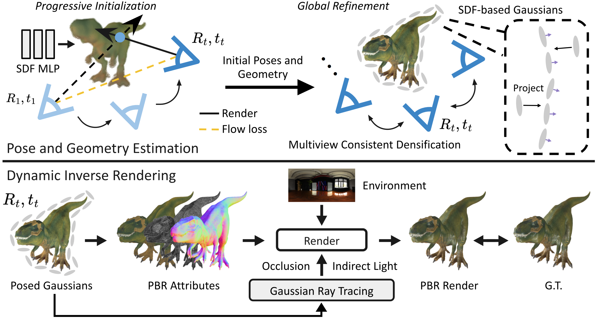
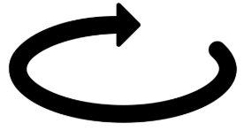
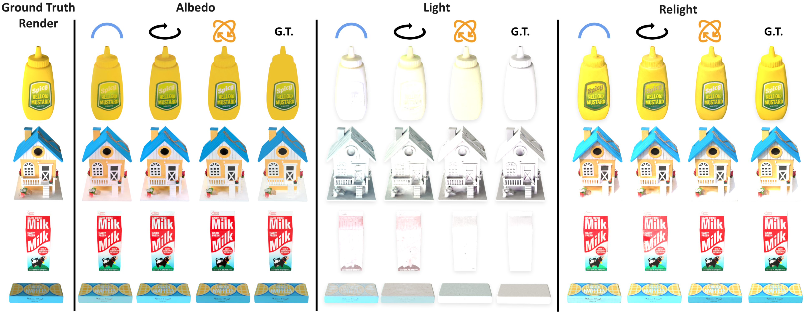
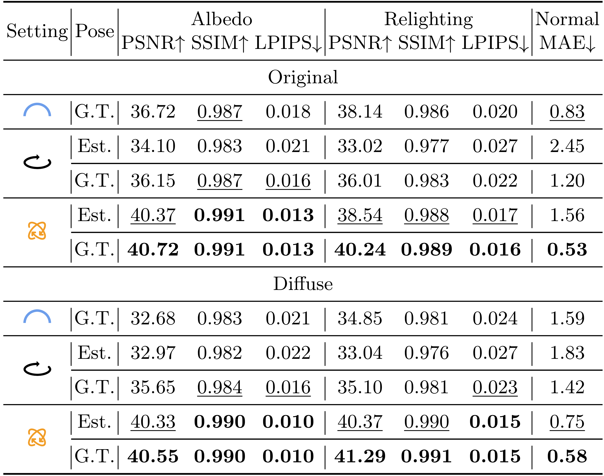
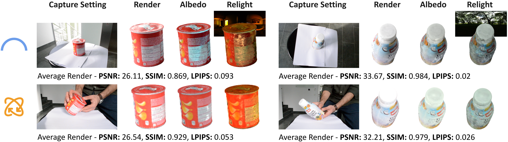
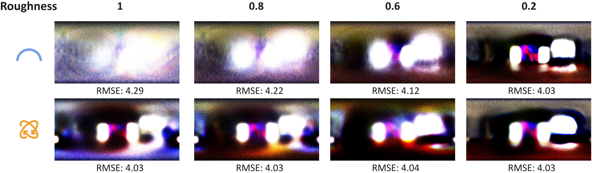
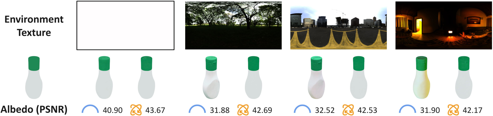
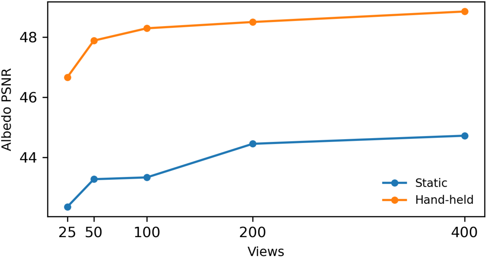
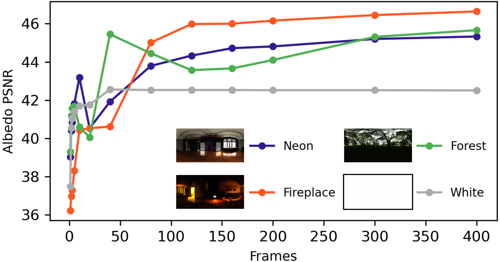

1. Progressive initialization
Progressive optimization with a neural SDF representation to get coarse initial estimates for object poses and geometry.
Key idea: Observing an object in motion, e.g. in a hand-held capture, provides stronger constraints for material-lighting decomposition than a static object capture.
Decomposing outgoing surface radiance into material and illumination during inverse rendering is essential for applications such as relighting and augmented reality, yet it is severely ill-posed since multiple combinations can result in the same observed colour. Capturing an object under multiple lighting conditions usually helps resolve this ambiguity as it constrains the optimization towards correct solutions. In this work, we explore the potential of reconstructing rigidly moving objects—which provides observations of diverse light-surface interactions—to resolve the material-lighting ambiguity in inverse rendering. For this purpose, we introduce a relightable approach that marries object tracking and reconstruction with inverse rendering for general rigidly moving objects. Our experimental analysis on synthetic data demonstrates that motion can be an advantage for disentangling material and lighting: the reconstructed material is significantly more accurate when the object is observed under rigid motion than when it is static. Moreover, results on RGB videos of real hand-held objects show that our pipeline preserves this advantage even under noisy real-world conditions.
We show that observing significant object motion provides stronger material-lighting constraints than static object capture.
We jointly handle object pose tracking, geometry reconstruction and physically based material-lighting estimation.
We introduce synthetic captures with ground-truth materials and relit views across static dome, turntable, and hand-held settings.
Progressive optimization with a neural SDF representation to get coarse initial estimates for object poses and geometry.
Refinement with an SDF-based 3D Gaussian representation to capture detailed geometry for inverse rendering.
Physically-based rendering from posed Gaussians to obtain accurate material-lighting decomposition from a moving object.

Qualitative: From
static
to
turntable


Quantitative: Hand-held rotations consistently improve albedo-light disentanglement and relighting quality for both the original (specular) and diffuse variants of our dataset, even outperforming the static capture (which uses ground-truth poses) when the object poses are estimated.

Real hand-held sequences produce cleaner albedo and more plausible relighting than static captures under similar render quality.

Hand-held capture recovers sharper illumination, even for diffuse objects where static capture is under-constrained.

Under complex lighting, static albedo quality degrades while hand-held capture maintains high quality.

25 hand-held views outperform 400 static views, showing that the decomposition gain is independent of view sampling.

Increasing diversity in object rotations improves disentanglement for complex environments.

@inproceedings{yunus2026dynamic,
author = {Yunus, Raza and Ummenhofer, Benjamin and Lenssen, Jan Eric and Ilg, Eddy},
title = {Dynamic Inverse Rendering for Enhanced Material-Lighting Decomposition},
year = {2026},
booktitle = {European Conference on Computer Vision (ECCV)},
}